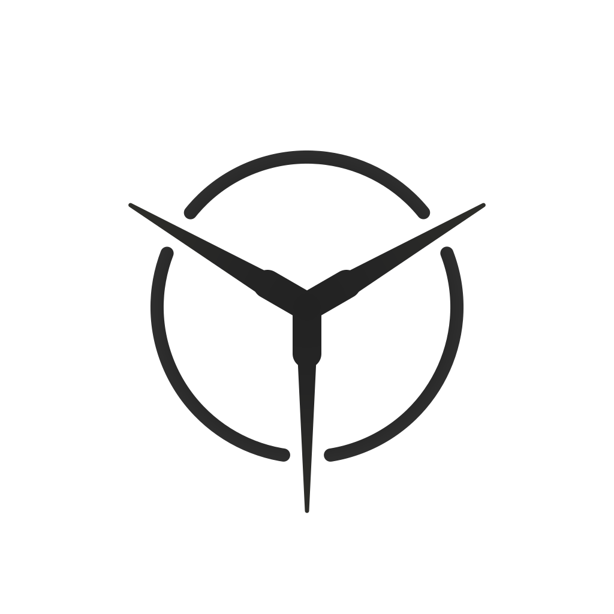

yaokit logo - v4 vs v5
第五版保留 v4 的汇流核细度，进一步收窄三条射线的中心根部，并修正根部与汇流核不同轴的问题。
v4 - 更轻的中心根部
外环 22px，汇流核 48px，根部已初步收细

v4 基线v5 - 根部继续收窄
外环和汇流核不变，射线根部更窄并与汇流核中心线对齐
v4 -> v5 变更：
外环保持
stroke-width=22，中心汇流核保持 stroke-width=48。
只调整三条射线的填充分支体：下分支根部半宽从 16 调到 13，
上分支根部半宽从 18 调到 15。
尖端仍保持 7px 总宽度。当前稿已把左右上方射线的根部中点修正到汇流核中心线端点，
避免窄根部时出现射线和汇流核视觉错位。